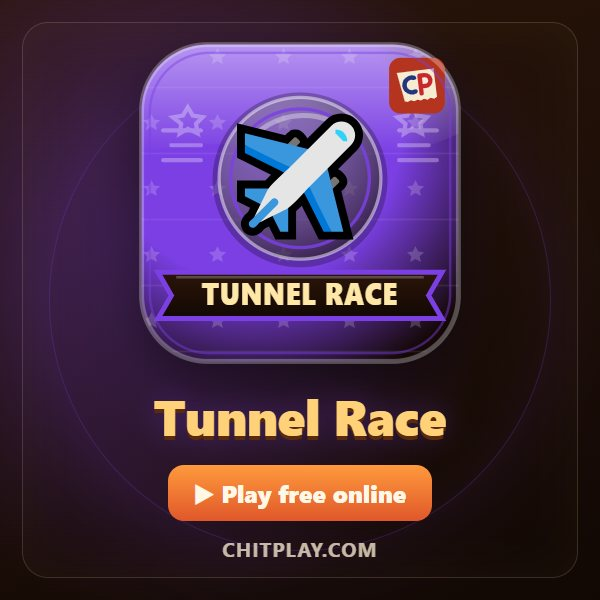
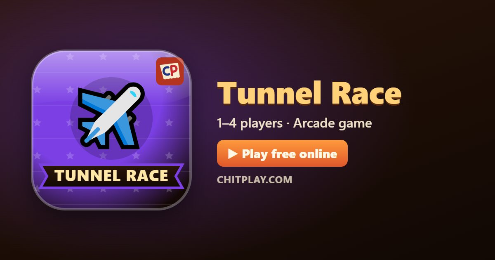

Tunnel Race: play free online and learn the rules
- 👥 1–4 players
- ⏱ 1–5 minutes
- 👤 guest play
- 🌍 online opponents
- 🤖 computer players
- 📶 friends nearby
- 🆓 free, no sign-up
Tunnel Race sends a paper plane down a long tunnel. Walls come at you from different sides, and you steer round the inside of the tunnel to slip past them. It starts gently and gets a little faster the further you go, so anyone can pick it up in seconds.

Ways to play Tunnel Race
- 👤 Guest play Start straight away, no account and no sign-up. Your best score is kept on your device.
- 🌍 Play online Get matched with real players from around the world. If nobody is free within a few seconds, computer players take the empty seats so you are never left waiting.
- 📶 Friends nearby Open a room, and friends join from their own phones with a 6-digit code or by scanning a QR code. Works on the same Wi-Fi or across the internet.
- 🎮 Two on one screen Sit side by side: one player on W A S D, the other on the arrow keys, or a gamepad each.
- 👀 Watch Let the computer players show you how the game goes before you jump in.
How to play
- Drag the stick left or right, or use A and D, the arrow keys or a gamepad, to fly round the inside of the tunnel.
- Red walls block part of the tunnel: go round them. Orange walls fill everything except a gap: go through the gap.
- Collect the glowing gems for 10 points each.
- Touching a wall ends your run. The tunnel gets faster the further you go, and each new level brings a new kind of wall.
Scoring
Points for the distance you fly, and 10 for each gem. Medals at 50, 150, 300 and 600 points.
Who wins
Alone, beat your own best score. With others, everyone races at once and the highest score wins.
Levels
- Paper tunnel: Plain red walls and orange walls with a gap.
- Twin walls: Walls on both sides of the tunnel at once: slip through the middle.
- Turning walls: Some walls turn as they come at you. Steer for where the gap will be, not where it is.
- Spin cycle (level 4 and up): More walls turn, and they turn faster.
- Gem ring: Every new level opens with a ring of eight gems all the way round: you can't miss one.
Tips
- Look at the second wall as well as the first.
- Small taps are faster than holding the stick all the way.
- Gems always sit on a safe line through the next wall.
Questions
Is it hard?
No. It starts slowly with wide gaps and speeds up only a little at a time.
Can friends race too?
Yes, up to four planes fly the same tunnel at once.
How do you play Tunnel Race online with friends?
Open Tunnel Race on ChitPlay and choose Nearby Play. One phone opens a room and gets a 6-digit code; your friends type the code or scan the QR code on their own phones and join. No sign-up is needed.
Can I play Tunnel Race without downloading anything?
Yes. Tunnel Race runs in the web browser on phones, tablets and computers. Open www.chitplay.com, pick Tunnel Race and play as a guest.
How many players can play Tunnel Race?
Tunnel Race on ChitPlay is for 1 to 4 players. You can play alone, or with friends and family.
Is Tunnel Race free to play?
Yes, Tunnel Race is completely free on ChitPlay. There is no real money, betting or prizes, and points have no value outside the game.
Can I play Tunnel Race against the computer?
Yes. You can play Tunnel Race on your own and try to beat your best score, or race against computer players.
More games
- Flying Chit
- Hoop Flick
- Ghost Hostel
- Pin Spin
- Ship Fight
- Bull Fight
- Road Dash
- Backyard Rally
- Hungry Snake
- Cops and Robbers (Raja Rani Chor Police)
- All games
Points in this game have no value. ChitPlay involves no real money, betting or prizes.